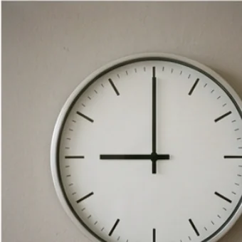

deutschoderwas · Sprechclub · Donnerstag, 10. September · Einzelstunde
Pünktlichkeit — Marotte oder Respekt?
In Deutschland heißt fünf Minuten zu spät oft schon: Du warst mir nicht wichtig. Stimmt das — oder ist das nur eine Angewohnheit, die sich für eine Tugend hält?
Dein Niveau
Gleiches Thema, andere Sätze. B1 nennt Argumente, B2 wägt ab und räumt Gegenargumente ein.
Zehn nach. Und niemand da.
Schaut euch das Bild an. Wie lange wartest du, bevor du schreibst — und was schreibst du dann?
Bist du eher pünktlich oder eher zu spät?
Wie lange wartest du auf jemanden, ohne dich zu ärgern?
Was schreibst du, wenn du selbst zu spät bist?
Ist Pünktlichkeit wirklich Respekt — oder nur eine Gewohnheit, die man zur Tugend erklärt hat?
Gibt es Situationen, in denen zu früh zu kommen unhöflich ist?
Was sagt es über eine Gesellschaft, wenn Züge pünktlich sein müssen?
🗣️ Sprecht reihum: „Ich bin meistens …“ · „Richtig geärgert habe ich mich, als …“ · „Zu spät komme ich vor allem, wenn …“
Fünf Minuten sind nicht überall gleich
In manchen Ländern beginnt eine Einladung um acht ungefähr um neun. In Deutschland steht der Gastgeber um acht mit dem Essen da. Beides ist normal — nur nicht am selben Ort.
Wie ist das in deinem Land — bei Freunden, bei Ärzten, bei Behörden?
Hast du hier schon einmal eine Situation falsch eingeschätzt?
Wo hast du dich umgestellt, und wo bist du geblieben, wie du bist?
👀 Zu zweit: Nennt euch drei Termine — Arzt, Party, Zug — und sagt, wie viele Minuten Verspätung dort jeweils in Ordnung sind. Wo seid ihr euch einig, wo nicht?
Zwölf Wörter für Zeit und Verspätung
Sagt jedes Wort laut — und gleich den Beispielsatz hinterher. Erst dann bleibt es hängen.
die Pünktlichkeit
„Pünktlichkeit ist hier keine Höflichkeit, sondern eine Erwartung.“
💡 Das Adjektiv: pünktlich. Und die feste Wendung: auf die Minute pünktlich.
die Verspätung
„Der Zug hat zwanzig Minuten Verspätung.“
💡 Verspätung haben für Züge und Menschen. Für Personen sagt man auch: sich verspäten.
der Termin
„Ich habe um halb vier einen Termin beim Zahnarzt.“
💡 einen Termin haben, ausmachen, absagen, verschieben. Ohne Termin geht in Deutschland fast nichts.
sich verspäten
„Ich verspäte mich um zehn Minuten, tut mir leid.“
💡 Reflexiv und etwas förmlicher als „zu spät kommen“. In einer Nachricht an die Chefin genau richtig.
die Haltestelle
„An der Haltestelle stand kein Mensch — der Bus war schon weg.“
💡 Für Bus und Straßenbahn. Beim Zug heißt es der Bahnhof oder das Gleis.
der Anschluss
„Wegen der Verspätung habe ich meinen Anschluss verpasst.“
💡 den Anschluss verpassen — wörtlich und im Leben. Auch: den Anschluss verlieren.
⏳
der Puffer
„Ich plane immer zwanzig Minuten Puffer ein.“
💡 Die Extrazeit, die man einrechnet. Puffer einplanen ist das Zauberwort aller pünktlichen Menschen.
die Verabredung
„Wir hatten eine Verabredung um sieben, und sie kam um acht.“
💡 Privat und locker. Im Beruf sagt man Termin, unter Freunden Verabredung oder einfach: Wir sind verabredet.
warten
„Ich habe eine halbe Stunde im Regen auf dich gewartet.“
💡 warten auf + Akkusativ. Und: jemanden warten lassen — genau darum geht es heute.
🙇
der Respekt
„Für viele ist Pünktlichkeit gelebter Respekt vor der Zeit des anderen.“
💡 Respekt vor + Dativ. Das Adjektiv respektvoll passt in fast jede Diskussion.

das akademische Viertel
„An der Uni beginnt eine Vorlesung um zehn Uhr c. t. — also um Viertel nach.“
💡 c. t. heißt cum tempore: eine Viertelstunde später. s. t. heißt: auf die Minute genau.
sich entschuldigen
„Er hat sich entschuldigt, ohne eine Ausrede zu erfinden.“
💡 sich bei jemandem für etwas entschuldigen. Und Vorsicht: „Ich entschuldige mich“ ist streng genommen etwas anmaßend — schöner ist Entschuldigung oder es tut mir leid.
💡 Spiel: Verdeckt die Wörter. Wer eine Karte aufdeckt, sagt damit einen Satz über den letzten Termin, zu dem er zu spät kam.
Drei Sorten Zeit — und drei gute Argumente
Erst die drei Verabredungen, für die ganz verschiedene Regeln gelten. Darunter drei Streitpunkte, jeweils mit dem stärksten Satz von beiden Seiten.
🩺
Der harte Termin
Arzt, Amt, Prüfung, Zug. Hier zählt die Minute.
Wer zu spät kommt, verliert den Platz.
💼
Der berufliche Termin
Meeting, Kundengespräch. Fünf Minuten vorher da sein.
Pünktlich heißt hier: schon sitzen, wenn es losgeht.
🎉
Die private Einladung
Party ja, Essen nein. Zum Essen kommt man pünktlich.
Zur Party gern eine halbe Stunde später.
✅ Pro Pünktlichkeit
Wer zu spät kommt, gibt seine Verspätung an alle weiter — der Termin verschiebt sich für zehn Leute, nicht für einen.
Das stärkste ArgumentEs rechnet in fremder Zeit statt in eigenem Gefühl. Dagegen ist schwer zu argumentieren.
❌ Contra Pünktlichkeit
Das gilt nur, wenn wirklich alle warten. Bei den meisten Terminen wartet genau eine Person.
Der KonterGrenzt das Argument ein, statt es zu bestreiten — die eleganteste Art zu widersprechen.
✅ Pro Pünktlichkeit
Pünktlichkeit ist verlässlich, und Verlässlichkeit ist die Grundlage von Vertrauen.
Das stärkste ArgumentVerschiebt das Thema von der Uhr zur Beziehung. Da hört jeder zu.
❌ Contra Pünktlichkeit
Verlässlich ist auch, wer immer zwanzig Minuten später kommt — man kann sich darauf einstellen.
Der KonterNimmt das Wort Verlässlichkeit ernst und dreht es um. Frech, aber logisch sauber.
✅ Pro Pünktlichkeit
In einem Land mit Fahrplänen, Terminvergabe und Schichtdienst ist Pünktlichkeit keine Marotte, sondern Infrastruktur.
Das stärkste ArgumentFührt die Frage weg vom Charakter hin zur Organisation. Damit ist sie schwer als Spleen abzutun.
❌ Contra Pünktlichkeit
Genau deshalb ist sie erlernt, nicht besser. Wer aus einem anderen System kommt, ist nicht unhöflich, sondern anders getaktet.
Der KonterTrennt Gewohnheit und Charakter — das nimmt der Diskussion die moralische Schärfe.
Drei Zeilen genügen, und zwar in dieser Reihenfolge:
1. Die Zahl: „Ich verspäte mich um zehn Minuten.“ Nicht „ich komme etwas später“.
2. Der Grund, kurz: „Die Bahn steht.“ Ein halber Satz reicht — lange Erklärungen wirken wie Ausreden.
3. Die Folge: „Fangt bitte ohne mich an.“ Damit gibst du dem anderen die Entscheidung zurück.
Und schick es sofort, nicht, wenn du schon zu spät bist. Zehn Minuten vorher ist eine Information, zehn Minuten danach eine Entschuldigung.
⚖️ Kurzübung: Jeder schreibt in drei Zeilen eine Verspätungsnachricht — an eine Freundin, an die Chefin, an den Arzt. Lest sie vor: Was ändert sich, außer der Anrede?
Die vier Bausteine einer guten Diskussion
Meinung sagen, begründen, einräumen, widersprechen. Wer diese vier hat, kommt in jeder Debatte durch.
1 · 💬 Meinung sagen Ich finde, dass …Für mich ist Pünktlichkeit …Meiner Meinung nach …
So klingt esMeiner Meinung nachistPünktlichkeit eine Frage der Situation.
2 · 🧱 Begründen … weil …Zum Beispiel: …Bei mir ist das so, dass …
So klingt esIch planeimmer zwanzig Minuten Puffer ein, weil die Bahn oft ausfällt.
3 · 🤝 Einräumen Das stimmt, aber …Da hast du recht, trotzdem …Klar, nur …
So klingt esDa hast du recht — trotzdem kommt es auf den Termin an.
4 · ✋ Widersprechen Das sehe ich anders.Ich glaube nicht, dass …Da bin ich nicht deiner Meinung.
So klingt esDassehe ich anders — Zuspätkommen sagt nichts über den Charakter.
1 · 💬 Position beziehen Ich vertrete die Auffassung, dass …Aus meiner Sicht spricht vieles dafür, dass …Man muss hier unterscheiden zwischen … und …
So klingt esMan muss unterscheiden zwischen harten Terminen und privaten Verabredungen.
2 · 🧱 Belegen Das zeigt sich daran, dass …Ein Beispiel dafür wäre …Nicht umsonst gibt es dafür einen eigenen Begriff.
So klingt esDaszeigt sich daran, dass es dafür einen eigenen Begriff gibt: das akademische Viertel.
3 · 🤝 Zugeständnis machen Zwar …, aber …Ich gebe zu, dass …Das mag zutreffen, dennoch …
So klingt esZwarkostet Warten Nerven, aber daraus folgt noch keine Charakterfrage.
4 · ✋ Sachlich widersprechen Da muss ich widersprechen.Das trifft in dieser Allgemeinheit nicht zu.Ich halte das für zu kurz gedacht.
So klingt esDastrifft in dieser Allgemeinheit nicht zu — es hängt vom Anlass ab.
Verb worum es geht Zeit und Menge Höflichkeit
🗣️ Sofort anwenden: Nehmt eine Frage aus dem Einstieg und antwortet mit allen vier Bausteinen am Stück — Meinung, Grund, Zugeständnis, Widerspruch. Vier Sätze, mehr nicht.
Vier Szenen — zwei Runden
Runde 1: Lest den Dialog zu zweit laut. Runde 2: Auf den Knopf tippen — B verschwindet, und ihr antwortet selbst. Die Regieanweisung bleibt als Hilfe stehen.
Dialog 1 · „Zwanzig Minuten im Regen“
Ihr wart um sieben verabredet. Es ist zwanzig nach, und es regnet seit sechs.
A
Sorry, sorry! Die Bahn ist ausgefallen.
B
Kein Problem, dass die Bahn ausfällt. Nur eine kurze Nachricht hätte mir geholfen.
🗣️ Trenn den Grund von dem, was du kritisierst. Nicht die Verspätung — die fehlende Nachricht.tippen = Hilfe zeigen
A
Ich dachte, ich schaffe es doch noch.
B
Das kenne ich. Ich hätte trotzdem drinnen gewartet, wenn ich Bescheid gewusst hätte.
🗣️ Zeig Verständnis — und nenn dann die konkrete Folge für dich.tippen = Hilfe zeigen
A
Stimmt, das war blöd. Nächstes Mal schreibe ich sofort.
B
Danke. Komm rein, ich hab schon bestellt.
🗣️ Nimm es an und mach Schluss mit dem Thema. Nachtreten bringt nichts.tippen = Hilfe zeigen
Dialog 2 · „Das Meeting fängt ohne dich an“
Du kommst sieben Minuten zu spät in eine Besprechung, die pünktlich begonnen hat.
A
Wir sind schon bei Punkt zwei.
B
Entschuldigung. Ich hänge mich an, ohne dass ihr etwas wiederholt.
🗣️ Kurze Entschuldigung, kein Grund, kein Drama. Und: Nimm der Gruppe keine Zeit.tippen = Hilfe zeigen
A
Alles gut. Möchtest du wissen, was zu Punkt eins entschieden wurde?
B
Danke, ich lese es nachher im Protokoll nach.
🗣️ Lehn freundlich ab. Nachlesen kostet niemanden außer dir Zeit.tippen = Hilfe zeigen
A
In Ordnung.
B
Und für die nächsten Wochen: Ich lege den Termin ab jetzt zehn Minuten früher in meinen Kalender.
🗣️ Nenn eine konkrete Maßnahme statt eines Versprechens.tippen = Hilfe zeigen
Dialog 3 · „Der Bus, der nie kam“
Du stehst an der Haltestelle. Der Bus fällt aus, dein Termin ist in zwanzig Minuten.
A
Praxis Dr. Weber, Meier am Apparat.
B
Guten Tag, Demir. Ich habe um halb vier einen Termin und verspäte mich um zehn Minuten.
🗣️ Name, Termin, Zahl. In dieser Reihenfolge, ohne Umschweife.tippen = Hilfe zeigen
A
Das wird knapp. Ab fünfzehn Minuten müssen wir Sie umbuchen.
B
Verstehe. Soll ich trotzdem kommen, oder buchen wir gleich um?
🗣️ Gib die Entscheidung zurück, statt zu verhandeln.tippen = Hilfe zeigen
A
Kommen Sie, wir schieben Sie hinter die nächste Patientin.
B
Vielen Dank, das ist nett. Ich bin um Viertel vor da.
🗣️ Bedanke dich und bestätige die neue Zeit — verbindlich.tippen = Hilfe zeigen
Dialog 4 · „Bei uns fängt man später an“
Ein Familienessen, ein Gast kam eine Stunde später. Am Tisch wird darüber diskutiert.
A
Eine Stunde! Das ist doch respektlos.
B
Das sehe ich anders. Bei einer Party ist das in vielen Ländern völlig normal.
🗣️ Widersprich klar und nenn den Unterschied zwischen Party und Essen.tippen = Hilfe zeigen
A
Wir hatten aber zum Essen eingeladen.
B
Da hast du recht — zum Essen kommt man pünktlich, sonst wird es kalt. Das ist ein praktischer Grund, kein moralischer.
🗣️ Räum den Punkt ein und verschieb ihn vom Charakter zur Praxis.tippen = Hilfe zeigen
A
Und wenn man es nicht weiß?
B
Dann fragt man. Zwar ist das ungewohnt, aber es ist besser, als zu raten.
🗣️ Nenn die Lösung und benutz zwar … aber.tippen = Hilfe zeigen
🎭 Und jetzt ihr: Spielt Dialog 4 noch einmal — aber jeder vertritt die Gegenposition zu seiner eigenen Meinung. Danach sagt ihr, welches Argument euch selbst überrascht hat.
🧩 Zeit im Satz: bevor, nachdem, sobald
Wer über Termine spricht, braucht die Nebensätze der Zeit. Das Wichtigste daran ist nicht die Bedeutung — es sind die Zeitformen.
bevor, nachdem, sobald und während leiten Nebensätze ein, das Verb geht also ans Ende. Die eigentliche Hürde ist nachdem: Dort muss der Nebensatz eine Zeitstufe früher stehen als der Hauptsatz. Vergangenheit im Hauptsatz heißt Plusquamperfekt im Nebensatz — nachdem ich angerufen hatte, ging ich los.
1️⃣bevorBevor ich losgehe, schreibe ich kurz.
▾
2️⃣sobaldSobald ich weiß, wann ich komme, sage ich Bescheid.
▾
3️⃣währendWährend ich wartete, wurde ich nass.
▾
4️⃣nachdemNachdem ich geschrieben hatte, fuhr ich los.
NebensatzNachdem ich geschrieben hatte,
Verbfuhr
Subjektich
Restendlich los.
Die Zeitstufen bei nachdem
Nur diese eine Regel musst du dir merken — der Rest ergibt sich.
⏮️
nachdem
Der Nebensatz liegt davor — eine Stufe früher
Nachdem ich angerufen hatte, ging ich los.
⏭️
bevor
Der Nebensatz liegt danach — gleiche Zeit
Bevor ich losging, rief ich an.
⏸️
während
Beides gleichzeitig — gleiche Zeit
Während ich wartete, rief ich an.
Hauptsatz Präteritum → Nebensatz PlusquamperfektHauptsatz Präsens → Nebensatz Perfektbevor und sobald: beide Sätze gleiche Zeitwährend: gleichzeitigseit / seitdem: Beginn in der Vergangenheit
Die Falle: nachdem ist kein danach
Das eine leitet einen Nebensatz ein, das andere steht im Hauptsatz. Verwechselt wird es täglich.
✅ Richtig
Nachdem ich geschrieben hatte, fuhr ich los.
WarumNebensatz mit Plusquamperfekt, danach der Hauptsatz im Präteritum. Verb direkt nach dem Komma.
❌ Falsch
Nachdem ich habe geschrieben, fuhr ich los.
MerkenIm Nebensatz steht das konjugierte Verb ganz hinten — und bei nachdem eine Stufe früher.
✅ Richtig
Ich habe geschrieben. Danachbin ich losgefahren.
Warumdanach steht im Hauptsatz auf Position 1, also folgt sofort das Verb.
❌ Falsch
Ich habe geschrieben. Danach ich bin losgefahren.
MerkenNach einem Wort auf Position 1 kommt immer erst das Verb, dann das Subjekt.
✅ Richtig
Bevor ich losgehe, schreibe ich dir.
WarumBei bevor stehen beide Sätze in derselben Zeit. Kein Plusquamperfekt nötig.
❌ Falsch
Bevor ich losgegangen war, schreibe ich dir.
MerkenDie Zeitverschiebung gehört nur zu nachdem. Bei bevor wirkt sie falsch und umständlich.
🧱 Bau die Sätze selbst
Tippe die Teile in der richtigen Reihenfolge an. Danach auf „prüfen“.
📖 Und jetzt im Zusammenhang
Ein Nachmittag, an dem alles zu spät kam. Wähle in jeder Lücke das passende Wort.
Stell dir die beiden Ereignisse auf einer Linie vor:
Der Nebensatz kommt zuerst → nachdem (und eine Zeitstufe früher).
Der Nebensatz kommt danach → bevor (gleiche Zeit in beiden Sätzen).
Beides gleichzeitig → während. Und für den Moment direkt danach: sobald.
Merksatz: Nachdem ich geschrieben hatte, ging ich los. Ein Satz — und du hast die schwierigste Regel darin.
🎭 Drei Streitfälle
Zu zweit. Jeder bekommt eine Position — auch wenn er sie privat nicht teilt. Zwei Minuten, dann tauschen.
1 · Der Freund, der immer zu spät kommt
B kommt seit Jahren zwanzig Minuten später. A hat es satt und spricht es heute an.
Ich habe eine halbe Stunde gewartetEine Nachricht hätte gereichtDas stimmt, aber …Was schlägst du vor?
Mir geht es nicht um die MinutenBei mir kommt an, dass …Zwar …, aber …Können wir uns darauf einigen, dass …?
✅ Eine gute Runde enthältA kritisiert nicht die Verspätung, sondern die fehlende Nachricht. Am Ende steht eine Absprache, kein Urteil.
2 · Fünf Minuten vor Sitzungsbeginn
A findet, dass pünktlich heißt: fünf Minuten vorher da sein. B hält das für Zeitverschwendung.
Pünktlich heißt für mich …Sonst fangen wir nie anDa hast du rechtFangen wir einfach an
Das ist eine Frage der VereinbarungIch halte das für zu starrZwar …, aber …Legen wir es einmal fest
✅ Eine gute Runde enthältAus einem Gefühlsstreit wird eine Vereinbarung: Beide sagen am Ende dieselbe Uhrzeit.
3 · Zwei Kulturen am Esstisch
A ist in einem Land aufgewachsen, in dem acht Uhr ungefähr neun heißt. B hat um acht das Essen auf dem Tisch.
Bei uns ist das normalIch wusste das nichtZum Essen kommt man pünktlichDann frage ich beim nächsten Mal
Das ist erlernt, nicht besserMan muss unterscheiden zwischen …Ich gebe zu, dass …Sagen wir es künftig einfach dazu
✅ Eine gute Runde enthältNiemand erklärt den anderen für unhöflich. Beide finden die praktische Lösung: dazusagen, was gemeint ist.
🎴 Sprechkarten
Zieh eine Karte und sprich mindestens vier Sätze am Stück.
Deine Aufgabe
Tippe auf den Knopf.
⏱️ Die 90-Sekunden-Challenge
Eine Situation, anderthalb Minuten. Erzähle: Was war ausgemacht, was ist passiert, und wie ging es aus?
Dein Wort
der Termin
1:30
Erzähl es in vier Schritten, dann trägt sich die Zeit von selbst:
1. Was war ausgemacht — wann, wo, mit wem?
2. Was ist dazwischengekommen?
3. Was hast du gemacht: geschrieben, angerufen, gehofft?
4. Wie hat der andere reagiert — und was machst du beim nächsten Mal anders?
Und wenn ein Wort fehlt: beschreib es. „So eine Extrazeit, die man einplant“ ist besser als eine Pause.
⏱️ Spielregel: In jeder Runde muss ein nachdem, ein bevor oder ein sobald vorkommen. Die Gruppe hört mit.
✅ Sitzt es schon?
8 Fragen. Tippe auf deine Antwort — die Erklärung kommt sofort.
✍️ Lückentext
Wähle in jeder Lücke das passende Wort.
📣 Danach laut: Lest die vier Bausteine noch einmal am Stück vor — Meinung, Grund, Zugeständnis, Widerspruch. Erst wenn es flüssig klingt, sitzt es.
📮 Deine Hausaufgabe bis nächste Woche
Vier kleine Aufgaben, zusammen etwa 25 Minuten. Tippe eine an, wenn du sie geschafft hast.
💡 Warum das hilft: Verspätungen passieren allen. Wer die drei Zeilen im Kopf hat, schreibt sie in zwanzig Sekunden — und aus einem Ärgernis wird eine Information.
0 von 0 Aufgaben geschafft.
So sehen die drei Nachrichten aus:
An die Freundin: „Ich verspäte mich um zehn Minuten, die Bahn steht. Geh schon mal rein!“
An die Chefin: „Guten Morgen, ich verspäte mich um etwa fünfzehn Minuten. Bitte fangen Sie ohne mich an.“
An die Praxis: „Guten Tag, Demir, Termin um halb vier. Ich verspäte mich um zehn Minuten — soll ich trotzdem kommen?“
Immer gleich aufgebaut: Zahl → Grund → Folge. Und immer sofort schicken, nicht erst, wenn du schon zu spät bist.
So klingen Argumente, die ein Zugeständnis enthalten:
„Zwar kostet Warten Nerven, aber daraus folgt noch keine Charakterfrage.“
„Ich gebe zu, dass Verlässlichkeit Vertrauen schafft — nur ist auch die verlässliche Verspätung eine Form davon.“
„Das mag für harte Termine zutreffen, dennoch gilt es nicht für jede Verabredung.“
„Da haben Sie recht, allerdings wartet bei den meisten Terminen genau eine Person.“
Der Aufbau ist immer gleich: erst der Punkt der Gegenseite, dann das Scharnier (aber, dennoch, allerdings), dann dein Argument.
📬 Abgabe: Schick deine Sprachnachricht bis Sonntag 18 Uhr in die Gruppe. Wir hören zwei davon gemeinsam an — freiwillig, versteht sich.
🔜 Ab dem 14. September geht es in Strang C jede Woche um so eine Streitfrage — mit Teil 1 und Teil 2. Damit ist die Vorwoche zu Ende: Danke fürs Mitmachen!